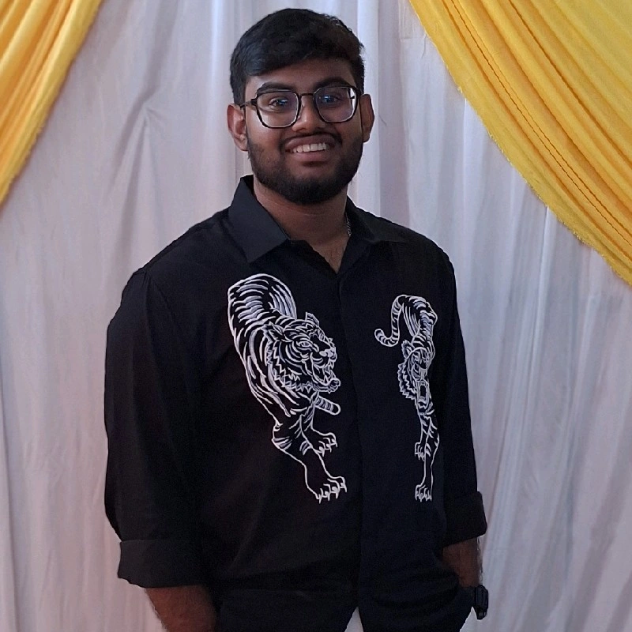

I am a Computer Science graduate passionate about web development and creating useful applications.
Hire Me View ProjectsI am a passionate and motivated Computer Science graduate with a strong interest in software development and modern web technologies. I enjoy creating responsive, user-friendly, and practical web applications that provide a good experience for users. I have knowledge of HTML, CSS, JavaScript, BootStrap, WindSurf AI, and Tailwind CSS. I am particularly interested in full-stack web development and enjoy working on both frontend interfaces and backend functionality. I also have experience working with REST APIs, databases, Git, and GitHub. During my academic journey, I worked on several projects that helped me improve my programming, problem-solving, debugging, and development skills. Some of my projects include **ChaloChale**, a travel-related web application, and **BiteBox**, a food ordering website. These projects gave me practical experience in designing interfaces, implementing functionality, and developing responsive websites. I am a quick learner who enjoys exploring new technologies and continuously improving my technical skills. I believe in writing clean and understandable code, solving problems logically, and learning from every project I work on. My goal is to begin my career as a software or web developer where I can apply my technical knowledge, contribute to real-world projects, work with a professional team, and continue growing as a developer.
A travel-related web application designed to help users explore and plan trips.
View Project